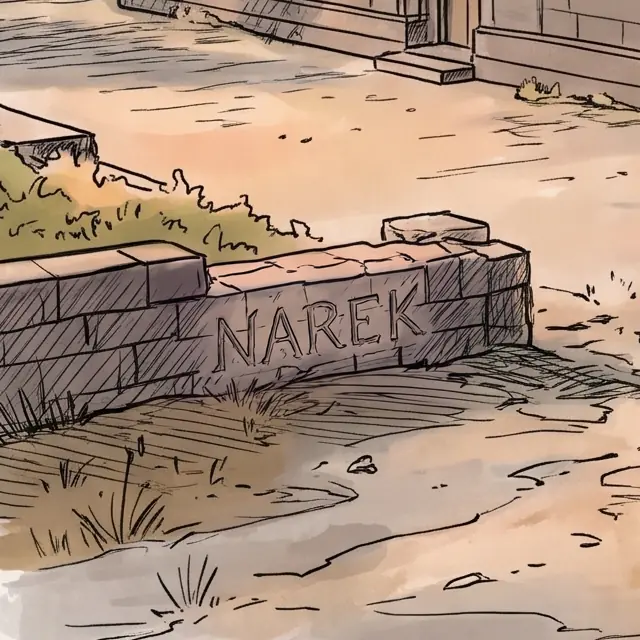
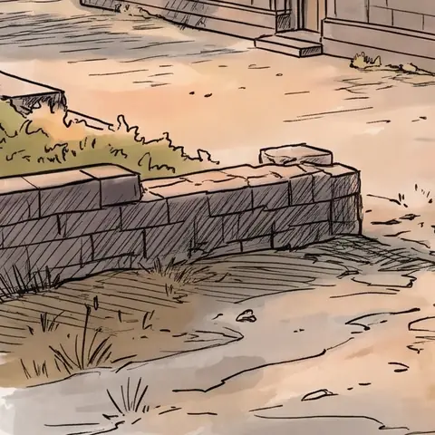

Սրահ I · Պողոս-ՊետրոսЗал I · Погос-ПетросRoom I · Poghos-Petros
Գրություն քարի վրաНадпись в камнеYour name in stone

նկարչի օրինակпример художникаartist’s exampleնկարչի օրինակ · № 3 տեղիցпример художника · с места № 3artist’s example · from spot No. 3
քո տեղըтвоё местоyour spotՔո գրությունըТвоя надписьYour inscriptionՑածր պատը ճանապարհի մոտНизкая стена у дорогиLow wall by the roadմինչև 10 տառдо 10 буквup to 10 letters · պատրաստ՝ 7 օրումготово за 7 днейready in 7 daysԸնտրիր տեղըВыбери местоChoose a spotազատ՝ 8 / 8свободно 8 из 88 of 8 free
Թողնել անունը · $15Оставить надпись · $15Leave your name · $15
Վճարում քարտով՝ Polar-ի միջոցով։ Նկարիչը կփորագրի մինչև 7 օրում, հղումը կգա էլ. փոստով։ Եթե դուր չգա՝ անվճար կվերանկարենք։Оплата картой через Polar. Художник вырежет надпись до 7 дней, ссылка придёт на почту. Если не понравится — переделаем бесплатно.Card payment via Polar. The artist carves it within 7 days, the link arrives by email. If you don't like it — we'll redo it for free.